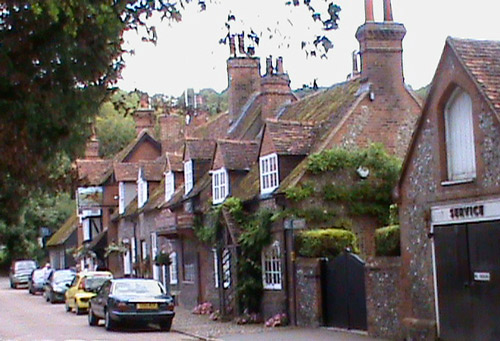
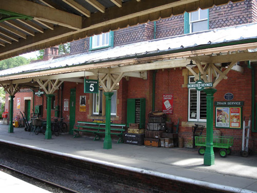
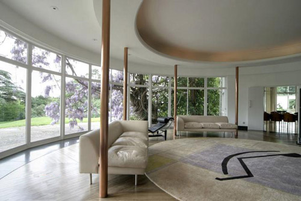
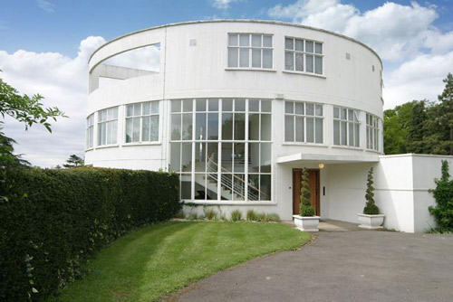
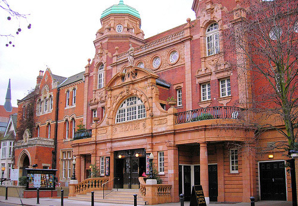

Hambleden in Buckinghamshire used as the village of 'Broadhinny'. (Also used in 'Evil Under The Sun' and 'Sad Cypress').

Horsted Keynes Station on the Bluebell Line in East Sussex used as 'Broadhinny Station' where an attempt is made on Poirot's life. (The Bluebell Line is also used in 'After the Funeral').

St Ann's Court in Chertsey used as the home of Eve and Guy Carpenter. The main staircase also features in 'The Plymouth Express' and the roof terrace in 'Three Act Tragedy'.

Designed in 1936 for stockbroker Gerald Schlesinger, Sir Raymond McGrath, who also created the interiors of BBC Broadcasting House which appear in 'The Affair at the Victory Ball', described St Ann's Court as his “most ambitious piece of design". The property also includes The Coach House which was converted into a recording studio by previous owner, Roxy Music’s Phil Manzanera, which has also been used by Paul Weller, Robert Wyatt and David Gilmour.

Freemasons' Hall is used once again - this time as the offices of 'The Sunday Comet'. (Also used in 'The Adventure of the Western Star', 'How Does Your Garden Grow?', 'One, Two, Buckle My Shoe' and 'Murder on the Orient Express').

Richmond Theatre used as the theatre where Ariadne Oliver and Robin Upward watch his play. (Also used in 'The Clocks'and 'The Big Four').